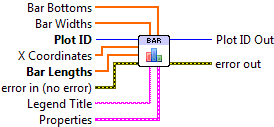
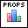

Bar Plot¶
Make a bar plot.
A bar plot consists of a series of vertically-oriented rectangles. The only required input is Bar Lengths, which is an array giving the heights of the bars. You can optionally specify the X Coordinates for the centers of the bars; if not given, they default to integers starting with 0 (0, 1, 2...).
By default, the bars start at y=0. Provide the Bar Bottoms array to specify starting Y locations for the bars instead.
All bars have the same color, taken from the color cycle (The Automatic Color Cycle) by default. You can override this by providing an explicit color property via Properties. Plots with a mixture of different bar colors may be made by calling Bar.vi several times, one for each bar color.

 Plot ID/Plot ID Out
Plot ID/Plot ID Out- Plot identifier. Plot ID Out always contains the same value as Plot ID.
 X Coordinates
X Coordinates- Locations of the bars on the X axis (in data units).
- Bar Lengths
- Size of the bars (in data units).
- Bar Widths
- By default, an appropriate width is chosen for the bars automatically. Use this input to manually specify the width of each individual bar in data units.
- Bar Bottoms
- By default, the bars are drawn starting at 0 on the Y axis. Use this input to specify a different location for the bottom of each bar, in data units.
 Legend Title
Legend Title- Title to be displayed if a legend is added to the plot.
-  Properties
Property cluster, available under the “Properties” subpalette.
 Bar Color
Bar Color- Color of the bars (PlotColor or LabVIEW color). By default, an appropriate color is chosen according to the color cycle.
 Line
LineControls the appearance of the bar outlines.
 Style
Style- Line style (solid, dashed, etc.). Default is to automatically select an appropriate style.
- Color
- Line color. May be a PlotColor or LabView color.
 Width
Width- Line width, in font points (1/72 inch).
- Display
Controls general appearance of the bar plot.
 Alpha
Alpha- Alpha blending value for this object (0.0 to 1.0). Default is 1.0 (fully opaque).
- Z Order
- Stacking order. Default is chosen based on the object type.

 Error In/Out
Error In/Out- Terminals for standard error functionality.
Example¶
Download Bar Plot.vi,
or see Examples for a complete list of examples.
Errors¶
Other information¶
If an non-finite entry (NaN or Inf) appears in X Coordinates, Bar Lengths, Bar Widths or Bar Bottoms, the corresponding bar will not be displayed and no error will be returned.
Negative values are permitted in Bar Widths; the absolute value will be used for the width. Negative values are permitted in Bar Lengths; the corresponding bars will extend downwards.
If X Coordinates, Bar Widths, or Bar Bottoms is provided with a different size than Bar Lengths, only the overlap will be displayed.